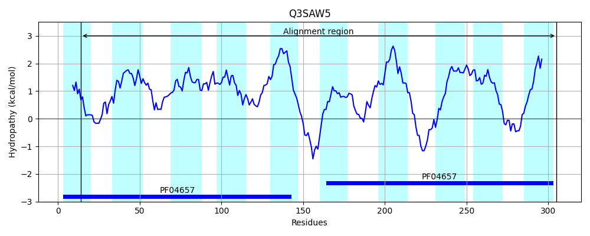

Hit Accession: Q3SAW5
Hit TCID: 2.A.7.21.4
Hit Description: gnl|BL_ORD_ID|13527 gnl|TC-DB|Q3SAW5|2.A.7.21.4 Orotate transporter - Lactococcus lactis subsp. lactis bv. diacetylactis.
Mach Len: 296
e:0.000000
Query TMS Count : 9
Hit TMS Count: 10
TMS-Overlap Score: 7.800000
Predicted Substrates:CHEBI:30839;orotate
BLAST Alignment:
Score: 420 , Bit scores: 166 bits, E-value: 1.2e-49, Alignment length: 296, Percentage identity: 36
Query: 2 LIPIQTSVNSRLSLYTKSPFYTSFISFSVGTICLIILNIIINPEVFTIHFYNNQSFNYTWVVGGLLGVSFLTGNLLLLPKLGATLTVIATVAGQIIMGVIIDTFGLFGATIHDFNLIKAIGVLLLIVGIVIMNQFN--KNNLLLTDQKYLLFWLLLGFIFGFFPPIQTTINSALASHTHSPAFASLVSFTIGSIALLILTAIFNRSLKLKTSHLKFGKLKPIYFTGGILGMAFVTANIILMPHMGAALTTLIGMFGQILMGILIDHFGLFGSPKIAMTSRKTIGLLCILTGIILLR 295
L+ Q +N+ L SPF S IS VG+I L I+ ++ + +F + + W+ GG+LG FLT N+LL P+LGA TVI + G+I+MG +ID+FG F A L++ +GV++ + G+++ K T Q LL W + I G Q IN L + A A+ VSF IG +A+ I++ +R L K S LK K KP GG LG + V A ++ +P +GA LT ++G+ GQIL +L+ FG + S K + + +G+L +LTGII ++
Sbjct: 14 LLANQNPINADLRKIVGSPFLASGISNFVGSIFLGIITLVTSQTLFPSFQFVGSHPVWIWI-GGVLGGIFLTSNVLLFPRLGAVQTVILPILGRILMGTLIDSFGWFHAMQLPMTLMRFLGVIITLAGVIVAVVLPNLKEKEAETHQTNLLGWRIWAVIVGAMSAAQQAINGRLGVLLENTAQATFVSFFIGFLAIFIVSLFIDRRLP-KISELK--KAKPWNGIGGFLGASIVFATVVAVPQIGAGLTIMMGLIGQILGSMLVQQFGWWRSSKYGIQIWQIVGILIMLTGIIFIK 305 | Protein Hydropathy Plots: |
|---|
|  |
Pairwise Alignment-Hydropathy Plot:
|
|---|
|